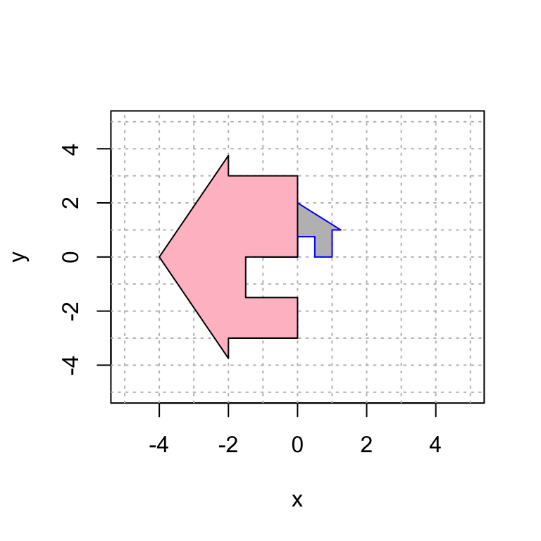

Vector 9 Linear Transformations of a House
Here is a plot of my house. You will need to run this chunk of code each time you re-start R to get the house back in memory.
house = cbind(c(0,0), c(0,3/4), c(1/2,3/4), c(1/2,0), c(1,0), c(1,1), c(5/4,1), c(0,2), c(-5/4,1), c(-1,1), c(-1,0), c(0,0));
plot(house[1,],house[2,],type="n",xlim=c(-5,5),ylim=c(-5,5),xlab="x",ylab="y")
abline(h=-6:6, v=-6:6, col="gray", lty="dotted")
polygon(house[1,], house[2,], col = "gray", border = "blue")
Today we will explore various families of linear transformations on the plane by looking at their effect on my house.
We give a series of examples of 2D linear transformations. After each example, it’s your turn to play with variations from the same family of transformations.
- Using the previous code snippets as a guide, create a single plot with the “before and after” houses.
- Discuss the results with your group and share cool examples!
- Describe the effect of the mapping as best you can. Be sure to look at the different effect on the “ground” and the “walls” of the course. Use words like, expansion, contraction, rotation, reflection and shear.
- Once you have looked at the effect of the family, look back at the form of the matrix \(A\). Can you explain why it leads to the outcome you see?
{kind=link}
9.1 Rotations
First we will rotate my house by pi/3 radians. A 2D rotation matrix by \(t\) radians is given by
\[A=\displaystyle{ \begin{bmatrix} \cos(t) & -\sin(t) \\ \sin(t) & \cos(t) \end{bmatrix}}.\]
Here is the code to display this transformation.
Observe that I apply the matrix A to the house, call it house2 and plot both the original house and the new house in the same plot.
# create a plot that we will add more layers to
plot(house[1,],house[2,],type="n",xlim=c(-5,5),ylim=c(-5,5),xlab="x",ylab="y")
# add the grid lines
abline(h=-6:6, v=-6:6, col="gray", lty="dotted")
# define the matrix A
A = cbind(c(cos(pi/3),sin(pi/3)),c(-sin(pi/3),cos(pi/3)))
# display A
A ## [,1] [,2]
## [1,] 0.5000000 -0.8660254
## [2,] 0.8660254 0.5000000# transform the house using matrix multiplication
house2 = A %*% house
# plot the original house
polygon(house[1,], house[2,], col = "gray", border = "blue")
# plot the transformed house
polygon(house2[1,], house2[2,], col = "pink", border = "black")
And now I rotate it back to its original position. The inverse in this case is rotation by -pi/3.I apply this mapping to house2 to get house3 and then plot those houses together.
plot(house[1,],house[2,],type="n",xlim=c(-5,5),ylim=c(-5,5),xlab="x",ylab="y")
abline(h=-6:6, v=-6:6, col="gray", lty="dotted")
Ainv = cbind(c(cos(-pi/3),sin(-pi/3)),c(-sin(-pi/3),cos(-pi/3))) # A inverse
Ainv # display A inverse## [,1] [,2]
## [1,] 0.5000000 0.8660254
## [2,] -0.8660254 0.5000000house3 = Ainv %*% house2
polygon(house2[1,], house2[2,], col = "pink", border = "black")
polygon(house3[1,], house3[2,], col = "green", border = "black")
9.1.1 Your Turn
Explore matrices of the form \[A=\displaystyle{ \begin{bmatrix} \cos(t) & -\sin(t) \\ \sin(t) & \cos(t) \end{bmatrix}}\] where \(t\) is in radians. Here is a function that will create such a matrix (so that you only have to enter the angle once).
create_angle_matrix <- function(t) {
A = cbind(c(cos(t), sin(t)), c(-sin(t), cos(t)))
return(A)
}
A = create_angle_matrix(pi/2)
A## [,1] [,2]
## [1,] 6.123234e-17 -1.000000e+00
## [2,] 1.000000e+00 6.123234e-17Note #1: R is numerical software. The example code rotates the couse by \(pi/2\). You’ll note that sin(pi/2) returns a value of 6.123234e-17 or something similar. This value is given in scientific notation, and is \(\approx 6.12 \times 10^{-17}\). You should treat this tiny number as equal to 0. Be sure to keep an eye out for return values like this that are “numerically equivalent to 0.”
Note #2: By default, an R plot stretches the horizontal scale compared to the vertical scale. In order to create a square plot, your R chunk should start with {r, fig.height=4,fig.width=4} rather than {r}. Here is an example of what that looks like:
9.2 Expansion and contraction
Next, let’s perform the transformation that scales the house by 2 in the \(x\)-direction and by 3 in the \(y\)-direction.
## [,1] [,2]
## [1,] 2 0
## [2,] 0 3plot(house[1,],house[2,],type="n",xlim=c(-5,5),ylim=c(-5,5),xlab="x",ylab="y")
abline(h=-6:6, v=-6:6, col="gray", lty="dotted")
house2 = A %*% house
polygon(house[1,], house[2,], col = "gray", border = "blue")
polygon(house2[1,], house2[2,], col = "pink", border = "black")
9.2.1 Your Turn
Explore matrices of the form \[A=\displaystyle{ \begin{bmatrix} a & 0 \\ 0 & b \end{bmatrix}}.\] Here is some sample code that would create such a matrix for \(a=1\) and \(b=1\).
Try various combinations of \(a\) and \(b\). Here are some guiding questions:
- How would you expand along the \(x\)-axis while contracting along the \(y\)-axis?
- What happens when \(a\) is negative? when \(b\) is negative? when both are negative?
9.3 Reflection over the line \(y=x\)
Now let’s try reflecting the house over the line \(y = x\). Note that by putting the assignment of A into parentheses it prints out the value of A while you are assigning it
## [,1] [,2]
## [1,] 0 1
## [2,] 1 0plot(house[1,],house[2,],type="n",xlim=c(-5,5),ylim=c(-5,5),xlab="x",ylab="y")
abline(h=-6:6, v=-6:6, col="gray", lty="dotted")
house2 = A %*% house
polygon(house[1,], house[2,], col = "gray", border = "blue")
polygon(house2[1,], house2[2,], col = "pink", border = "black")
9.3.1 Your Turn
Explore matrices of the form \[A=\displaystyle{ \begin{bmatrix} 0 & a \\ b & 0 \end{bmatrix}}.\] Try various combinations of \(a\) and \(b\), using both positive and negative values.
9.4 Shear Transformations
A shear transformation leaves the direction of one axis fixed. Here is an example.
## [,1] [,2]
## [1,] 1 1
## [2,] 0 1plot(house[1,],house[2,],type="n",xlim=c(-5,5),ylim=c(-5,5),xlab="x",ylab="y")
abline(h=-6:6, v=-6:6, col="gray", lty="dotted")
house2 = A %*% house
polygon(house[1,], house[2,], col = "gray", border = "blue")
polygon(house2[1,], house2[2,], col = "pink", border = "black")
9.4.1 Your Turn
Now explore matrices of the form \[ A=\displaystyle{ \begin{bmatrix} a & b \\ 0 & c \end{bmatrix}} \quad \mbox{and} \quad A=\displaystyle{ \begin{bmatrix} a & 0 \\ b & c \end{bmatrix}} \]
Start with \(a=b=c=1\). Then consider a wider variety of such matrices as with the families above.
9.5 Dimension Reduction
Here we perform the transformation that sends \(\mathsf{e}_1\) to \((-1,1/2)\) and \(\mathsf{e}_2\) to \((2,-1)\). Notice that they are the same line and the transformation projects the house onto this line.
## [,1] [,2]
## [1,] -1.0 2
## [2,] 0.5 -1plot(house[1,],house[2,],type="n",xlim=c(-5,5),ylim=c(-5,5),xlab="x",ylab="y")
abline(h=-6:6, v=-6:6, col="gray", lty="dotted")
house2 = A %*% house
polygon(house[1,], house[2,], col = "gray", border = "blue")
polygon(house2[1,], house2[2,], col = "pink", border = "black")
9.5.1 Your Turn
Rxplore matrices of the form \[ A=\displaystyle{ \begin{bmatrix} a & ca \\ b & cb \end{bmatrix}} \quad \mbox{and} \quad A=\displaystyle{ \begin{bmatrix} a & b \\ ca & cb \end{bmatrix}} \] Once again, consider a wide variety of such matrices using various values for \(a,b,c\).
9.6 A Complicated Transformation
Finally, suppose that we wish to perform the transformation that reflects over the \(y\)-axis, then rotates by pi/2, and finally scales the \(x\)-direction by 2 and the y-direction by 3 in that order. You can do this as three matrices that you multiply together.
Note: The order of these matrices goes from right to left. The rightmost matrix is the one that is closest to the vector. So that transformation happens first!
The matrix A:
scale = cbind(c(2,0),c(0,3))
rot = cbind(c(cos(pi/2),sin(pi/2)),c(-sin(pi/2),cos(pi/2)))
reflect = cbind(c(-1,0),c(0,1))
A = scale %*% rot %*% reflect
plot(house[1,],house[2,],type="n",xlim=c(-5,5),ylim=c(-5,5),xlab="x",ylab="y")
abline(h=-6:6, v=-6:6, col="gray", lty="dotted")
house2 = A %*% house
polygon(house[1,], house[2,], col = "gray", border = "blue")
polygon(house2[1,], house2[2,], col = "pink", border = "black")
9.6.1 Your Turn
Using the previous example as a guide, create a complicated mapping of your own that combines some of the linear transformations above.